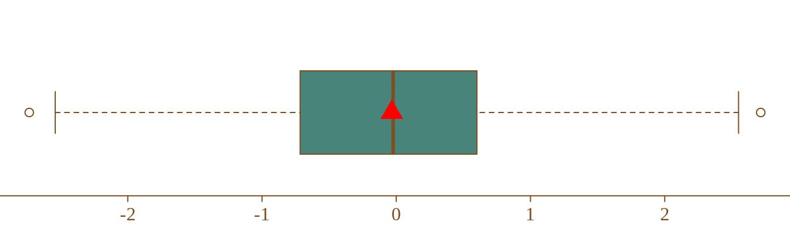

Le package {pkgmin} est un exemple de package très simple sous R. Le versioning indique les différentes étapes qui ont conduit à son élaboration (from scratch).
Tout d’abord, chargeons le package sous R :
Quelques commandes utiles pour bien démarrer :
## Documentation du package -----------
?pkgmin
## Contenu du package -----------
ls("package:pkgmin")
## Aide des objets importés -----------
?pkgmin::moyenne
?pkgmin::xyImportons les données de l’exemple reproductible :
## Importation des données -----------
data(xy)
## Objets en mémoire -----------
ls()
#> [1] "xy"
## Aperçu des données -----------
xy
#> x y
#> 1 -0.36408688 NA
#> 2 -0.49095886 2
#> 3 -1.23603718 3
#> 4 -0.76769157 4
#> 5 -0.60156359 5
#> 6 -2.48098410 6
#> 7 -0.60094632 7
#> 8 -0.21617985 8
#> 9 -0.07851793 9Utilisons-le :
## Moyenne sans valeur manquante -----------
moyenne(xy$x)
#> [1] -0.7596629
## Moyenne avec valeur manquante -----------
moyenne(xy$y, na_rm = TRUE)
#> [1] 5.5## Nouvelles données -----------
x <- rnorm(100)
moy <- pkgmin::moyenne(x)
## Graphical parameters -----------
mycol <- "#7c4e20"
par(
bg = "transparent",
mar = rep(0, 4),
col.axis = mycol,
col = mycol,
fg = mycol,
family = "serif",
tcl = -0.25,
mgp = c(3, .30, 0)
)
## Add boxplot -----------
boxplot(
x,
col = "#49847b",
border = "#7c4e20",
horizontal = TRUE,
axes = FALSE
)
## Ajout de la moyenne -----------
points(
x = moy,
y = 1,
pch = 17,
cex = 2,
col = "red"
)
## Ajout de l'axe des x (axe) -----------
axis(
side = 1,
pos = 0.6,
at = c(par()$usr[1], par()$usr[2]),
labels = NA,
lwd = 1,
lwd.ticks = 0
)
## Ajout de l'axe des x (valeurs) -----------
axis(
side = 1,
pos = 0.6,
lwd = 0,
lwd.ticks = 1
)
Enjoy!